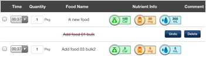

The Food Summary page includes a "Copy" icon button (the middle icon) on the top left of the screen:
This "Copy" button will be disabled (gray) until you select at least one food item (checkmarks will appear next to selected items). Once you have selected the food item(s) you would like to copy the "Copy" icon button will become blue:

If you click it then there will be a confirmation popup displayed like the following:
Click on this "Copy" button to copy the selected records. Navigate to the day you would like to paste the copied consumption record(s) to and click the paste button (3rd button):
It will display a confirmation popup like the following:

Click the "Paste" button will paste the copied food(s) on the Consumption screen. Click the "Cancel" button will cancel the paste operation.